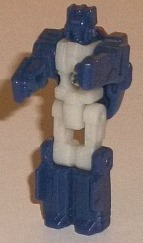
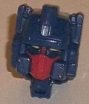
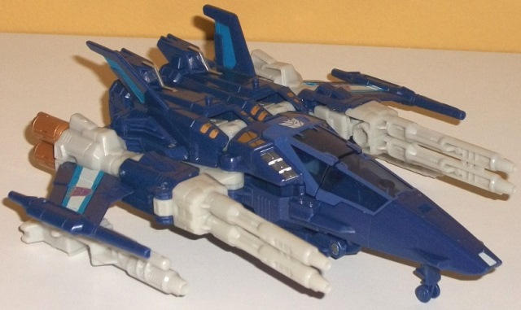
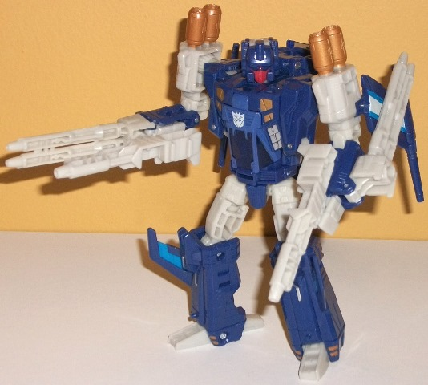

Allegiances
: Decepticon
Size
: Deluxe
Difficulty of Transformation
: Medium
Color Scheme
: Milky brownish off-white,
moderately dark dull periwinkle, and some blue, silver, moderately dark
periwinkle, transparent purplish blue, light orange, moderately dark red,
and moderately pale metallic bronze
Rating
: 9.6


Blowpipe was Triggerhappy's
Targetmaster in G1, and since this is a Titans Return toy, he's been repurposed
into a Headmaster/ Titan Master. In robot mode, Blowpipe has the same general
details as his G1 toy. Unfortunately, Blowpipe has a very generic design
for a "-Master" toy, with straight, fairly generic detailing on the legs,
fists molded onto the inside of the arms, and some minor angular details
on the elbows and middle of the chest. The head is also pretty same-ish,
having a helmet with two antennae, a visor, and a normal mouth-- the same
head could fit several dozen late G1 toys, honestly. In this mode, as has
sadly become the norm in Titans Return, there's no paint at all to bring
out any of these details. His main body is a fairly unique shade of off-white--
it has a slightly brownish/tan tint to it. I think it would've looked slightly
better without that brownish tint, but it's a very light tint, so it's
not a huge issue. The dark dull periwinkle used for the rest of this mode
is a pretty nice shade, and one that isn't used on many TFs-- it contrasts
nicely with the off-white. As is the case with all Titan Masters, Blowpipe
can move at the head and back-and-forth at the shoulders, hips, and knees
(with the latter two being at one point, as the legs are one piece). The
head mode deviates quite a bit from the G1 toy-- the same general "helmet
with two side antennae and a forehead vent" shape is there, but instead
of a visor there's two seperate eyes, and instead of a normal mouth on
the G1 toy there's a faceplate. I like the change-up, though, since this
makes his facesculpt look more unique. The red faceplate and orange eyes
really contrast extremely well against the perwinkle, and I also love the
gap in between the eyes and faceplate in terms of paint, as it makes Triggerhappy
look like he's got bags under his eyes-- like he's hyped up on caffeine
and has been shooting randomly for too long. I could've done with a slightly
asymmetrical, crazy look in his eyes to accentuate this, but it's still
a good look.


Triggerhappy's vehicle
mode is taken pretty strictly from his G1 form, only wtih proportions that
are a bit slimmer and more "modernized"; he's a futuristic jet (or perhaps
spacecraft; it's often hard to tell with this futuristic stuff). Anyways,
there's a lot of futuristic alt modes that are "futuristic" as an excuse
to make the alt mode obviously the robot mode doing extreme yoga; this
is NOT one of these alt modes. This looks like a legit futuristic jet,
with a very long nosecone, long dual cannons on each side that taper back
to relatively short diagonal wings with laser blasters molded on the end
of each wing, and then two thrusters on each side behind those wings. The
main body of the jet is fairly solid, with two diagonal but pretty small
tailfins. The back end is really the only weakness of this mode; there's
no real back end beyond the side thrusters, as the back end of the main
body is just the folded-up back legs/knees. It's not visible from any other
angle, though, so that's a minor issue. Thus, beyond that and the wings
being a bit small this is a rock-solid alt mode; there's only a bit of
a hinge below the "belly" of the jet, so there's not a bunch of undercarriage
junk, and there is a fold-out landing gear below the nosecone (though the
wheel doesn't roll). There's also two pegs for Titan Masters to stand on
top of the rear section of the main body, on top of the sections behind
what become the robot feet. There's also, of course, a space for Blowpipe,
as the rear section of the cockpit window opens up for him to sit in. The
color scheme consists mostly of a dark, fairly dull periwinkle, as well
as a milky brownish off-white. As I mentioned earlier, I think the off-white
would've looked better without that brown tint in it, but it does contrast
very well with the periwinkle, which is quite a good shade and looks great
on a jet. The perwinkle paint used on a few places like the lining of the
cockpit windows is a bit noticeably lighter than the plastic, though. The
transparent purplish blue used for said cockpit window looks pretty good
and complements the periwinkle nicely-- though honestly I wish it was a
bit lighter for a bit more contrast. There's also some nice metallic bronze
used on little bits around the center of the body and the thrusters-- it's
a solid color and definitely goes extremely well against the periwinkle;
I wish this was used in place of all the brownish off-white. Some other
accent colors include some silver on the cockpit vents and on what becomes
the robot knees, blue on the tailfins, and that same blue bordering a stripe
of off-white on the wings which looks fairly nice. As with many Titans
Return toys, the mold detailing alternates between rather sparse areas
that are supposed to be smooth and aerodynamic (such as the nosecone),
and very detailed areas such as the vents along the side of the body and
several small panel lines and circles along the wings and below the cockpit.
For weapons, Triggerhappy has two dual-barrel guns that can be combined
together to form a larger gun that a Titan Master can sit in. In this mode
they plug in underneath each wing.
Triggerhappy's transformation
is quite ingenious, as part of the nosecone as well as the back section
of the body all fold down and then rotate around on a hinge connecting
both pieces and then fold back up to form Triggerhappy's feet and upper
back, while the side guns fold up to become the arms and shoulders. It's
pretty darn cool to perform. In robot mode Triggerhappy also is remarkably
G1-y in terms of his design, but again, with modernized proportions and
better detailing. The only major difference in terms of design is that
the entire long cockpit just hanged below Triggerhappy's body on the G1
toy, whereas on this toy that part of the nosecone is behind the upper
back. It's definitely a bit of kibble back there, but it stays out of the
way, and doesn't interfere with the articulation, so it's not a big deal.
The wings fold back behind the upper arms and actually kinda enhance his
silouhette a bit so I like that placement, even if it's just a bit more
kibble to be honest. I love how the dual cannons from the vehicle mode
fold directly back on the lower arms. Folded back they can get in the way
a bit in terms of articulation, but on the other hand this allows you to
easily fold away the fists and fold those dual cannons back into place,
so Triggerhappy can have his dual cannons on each arm to wield even in
robot mode! (The inside of the dual cannon pieces also have ports to peg
in Triggerhappy's hand-held weapons, even if those cannon pieces are deployed
forward.) The rest of the robot mode is pretty solid; beyond the more prevalent
brownish off-white, I have no complaints. The legs are pretty proportional,
and the little tailfins make nice bits on the sides of the knees. The body
goes from slim at the waist where the cockpit is to wider up at the chest
with additional portions of the side of the body clamped on during transformation,
so everything's pretty proportional there too, with the bronze and silver
paint apps on the vents helping to break up the perwinkle pretty nicely.
The bronze thrusters on top of the shoulders are also a nice touch and
help make him more unique. For articulation, Triggerhappy can move at the
neck, shoulders (at two points), elbows (at two points), inwards at the
wrists, waist rotation, and movement at the hips (at two points), knees,
and slightly up-and-down at the ankles. Given how well-balanced he is,
this means he can get into a ton of great poses.
Titans Return Triggerhappy
is my favorite Decepticon mold out of the entirety of the Titans Return
line. He's got a very solid, unique robot mode, a decent color scheme (though
I wish the off-white wasn't brownish), only a little bit of kibble in robot
mode, and excellent proportions in both modes with great articulation and
lots of firepower. Highly recommended.
Review by Beastbot